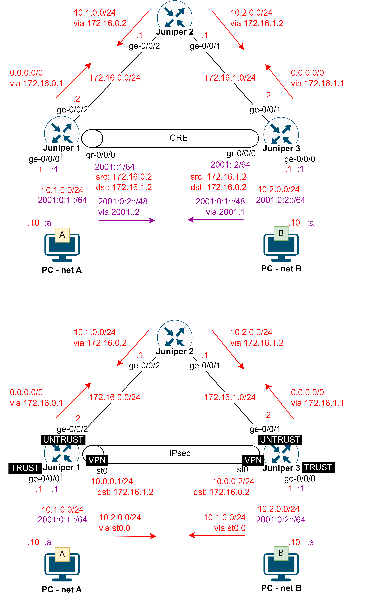

> show interfaces terse
> show route
# set security forwarding-options family inet6 mode packet-based
# set protocols router-advertisement interface ge-0/0/0 prefix <IPv6 address
of network on interface>/<prefix length>
# set interfaces gr-0/0/0 unit 0 tunnel source <local IPv4 address>
destination <remote IPv4 address>
# set interfaces gr-0/0/0 unit 0 family inet6 address <IPv6 address for
tunnel interface>/<prefix length>
# set routing-options rib inet6.0 static route <IPv6 address of remote
network> next-hop <IPv6 address of remote tunnel end>
# set security forwarding-options family inet mode flow-based set security
forwarding-options family inet6 mode flow-based
# set security forwarding-options family mpls mode flow-based
# commit and-quit
> request system reboot
# set security zones security-zone TRUST host-inbound-traffic system-services
all
# set security zones security-zone TRUST host-inbound-traffic protocols all set
security zones security-zone TRUST interfaces ge-0/0/
# set security zones security-zone UNTRUST host-inbound-traffic system-services
all
# set security zones security-zone UNTRUST host-inbound-traffic protocols all
# set security zones security-zone UNTRUST interfaces ge-0/0/<x>
# set security policies from-zone TRUST to-zone UNTRUST policy policy match
source-address any
# set security policies from-zone TRUST to-zone UNTRUST policy policy match
destination-address any
# set security policies from-zone TRUST to-zone UNTRUST policy policy match
application any
# set security policies from-zone TRUST to-zone UNTRUST policy policy then
permit any
# set security policies from-zone UNTRUST to-zone TRUST policy policy match
source-address any
# set security policies from-zone UNTRUST to-zone TRUST policy policy match
destination-address any
# set security policies from-zone UNTRUST to-zone TRUST policy policy match
application any
# set security policies from-zone UNTRUST to-zone TRUST policy policy then
permit any
# run request system software add optional://junos-ike.tgz
# run show version | grep ike
# set security ike proposal IKE-PROP authentication-method pre-shared-keys
# set security ike proposal IKE-PROP lifetime-seconds 3600
# set security ike proposal IKE-PROP authentication-algorithm sha-256
# set security ike proposal IKE-PROP encryption-algorithm aes-256-cbc
# set security ike proposal IKE-PROP dh-group group24
# set security ike policy IKE-POL proposals IKE-PROP
# set security ike policy IKE-POL mode main
# set security ike policy IKE-POL pre-shared-key ascii-text <secret key>
# set security ike gateway IKE-GW ike-policy IKE-POL
# set security ike gateway IKE-GW address <IPv4 of remote device>
# set security ike gateway IKE-GW external-interface ge-0/0/<x>
# set security ipsec proposal IPSEC-PROP lifetime-seconds 1800
# set security ipsec proposal IPSEC-PROP protocol esp
# set security ipsec proposal IPSEC-PROP authentication-algorithm hmac-sha-512
# set security ipsec proposal IPSEC-PROP encryption-algorithm aes-256-cbc
# set security ipsec policy IPSEC-POL proposals IPSEC-PROP
# set security ipsec policy IPSEC-POL perfect-forward-secrecy keys group24
# set security ipsec vpn IPSEC-VPN ike gateway IKE-GW
# set security ipsec vpn IPSEC-VPN ike ipsec-policy IPSEC-POL
# set security ipsec vpn IPSEC-VPN establish-tunnels immediately
# set security ipsec vpn IPSEC-VPN bind-interface st0.0
# set interfaces st0 unit 0 family inet address <IP address>/<prefix
length>
# set routing-options rib inet.0 static route <remote network
address>/<prefix length> next-hop st0.0
# set security zones security-zone VPN host-inbound-traffic system-services all
# set security zones security-zone VPN host-inbound-traffic protocols all
# set security zones security-zone VPN interfaces st0.0
# set security address-book global address NET-LOCAL <IP address of local
network>/<prefix length>
# set security address-book global address NET-REMOTE <IP address of remote
network>/<prefix length>
# set security policies from-zone TRUST to-zone VPN policy policy match
source-address NET-LOCAL
# set security policies from-zone TRUST to-zone VPN policy policy match
destination-address NET-REMOTE
# set security policies from-zone TRUST to-zone VPN policy policy match
application any
# set security policies from-zone TRUST to-zone VPN policy policy then permit
# set security policies from-zone VPN to-zone TRUST policy policy match
source-address NET-REMOTE
# set security policies from-zone VPN to-zone TRUST policy policy match
destination-address NET-LOCAL
# set security policies from-zone VPN to-zone TRUST policy policy match
application any
# set security policies from-zone VPN to-zone TRUST policy policy then permit
> show security ike security-associations
> show security ipsec security-associations
> show security ipsec statistics